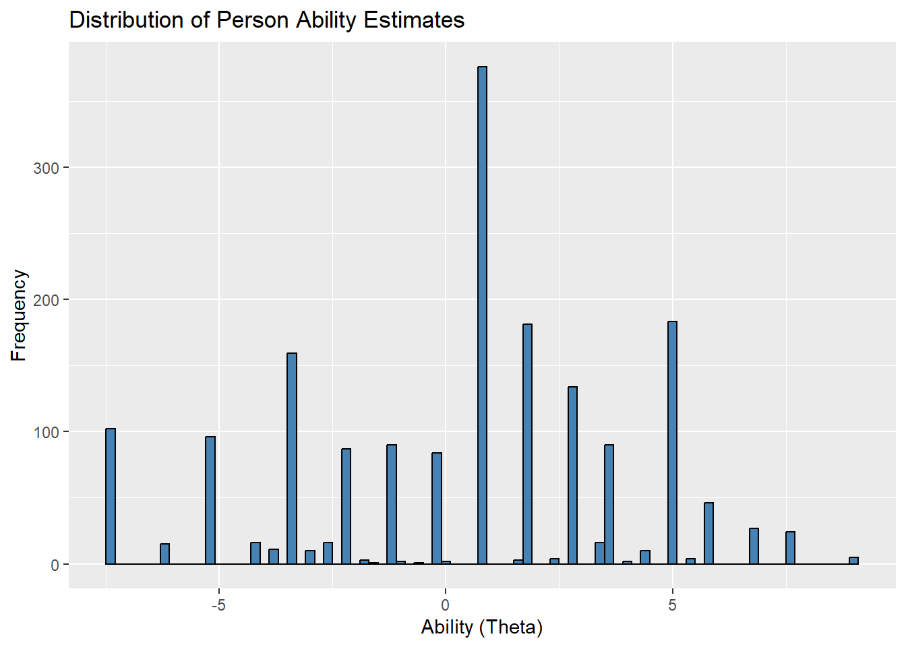

![]()
# A tibble: 6 × 6
Con ProAd Lang Nar rater essayId
<dbl> <dbl> <dbl> <dbl> <dbl> <dbl>
1 4 4 3 3 1 1
2 2 2 4 3 1 2
3 4 4 4 4 1 3
4 3 2 4 4 1 4
5 4 4 4 4 1 5
6 1 1 1 2 1 6Introduction
While a basic Rasch model focuses on item difficulty and person ability, the Multi-Facet Rasch Model (MFRM) allows us to incorporate additional factors, or facets, such as:
Person Ability (e.g., the skill level of test-takers),
Item Difficulty (e.g., how hard the test items are),
Rater Severity (e.g., how lenient or strict raters are),
Task or Stimulus Differences (e.g., variation in tasks given).
MFRM is said to be IRT version of generalizability theory and it is particularly useful when assessments involve subjective judgments, like in essay grading or performance evaluation, where raters’ subjectivity can introduce bias.
# Load the libraries
library(readr)
library(tidyr)
library(ggplot2)
library(dplyr)
library(tidyverse)
library(TAM)
library(cowplot)1. Understand the data
For MFRM analysis, we are going to use a dataset of essay scores scored on an analytical rubric. There are four domains of the rubric: Content, Prompt Adherence, Language, and Narrativity. Let’s load the data and see the head of them. You can download the data for your own use from here.
Let’s see the structure and summary of the data too.
str(data)spc_tbl_ [5,400 × 6] (S3: spec_tbl_df/tbl_df/tbl/data.frame)
$ Con : num [1:5400] 4 2 4 3 4 1 1 2 4 3 ...
$ ProAd : num [1:5400] 4 2 4 2 4 1 1 2 4 3 ...
$ Lang : num [1:5400] 3 4 4 4 4 1 1 4 4 4 ...
$ Nar : num [1:5400] 3 3 4 4 4 2 1 4 4 2 ...
$ rater : num [1:5400] 1 1 1 1 1 1 1 1 1 1 ...
$ essayId: num [1:5400] 1 2 3 4 5 6 7 8 9 10 ...
- attr(*, "spec")=
.. cols(
.. Con = col_double(),
.. ProAd = col_double(),
.. Lang = col_double(),
.. Nar = col_double(),
.. rater = col_double(),
.. essayId = col_double()
.. )
- attr(*, "problems")=<externalptr> summary(data) Con ProAd Lang Nar rater
Min. :0.000 Min. :0.000 Min. :0.000 Min. :0.000 Min. :1
1st Qu.:1.000 1st Qu.:1.000 1st Qu.:1.000 1st Qu.:1.000 1st Qu.:1
Median :2.000 Median :2.000 Median :2.000 Median :2.000 Median :2
Mean :1.878 Mean :1.784 Mean :2.062 Mean :1.958 Mean :2
3rd Qu.:3.000 3rd Qu.:3.000 3rd Qu.:3.000 3rd Qu.:3.000 3rd Qu.:3
Max. :4.000 Max. :4.000 Max. :4.000 Max. :4.000 Max. :3
essayId
Min. : 1.0
1st Qu.: 450.8
Median : 900.5
Mean : 900.5
3rd Qu.:1350.2
Max. :1800.0 There are 1800 rows of data. Each domain is scored between 0 and 4. Perfect as zero must exist in the ordinal data for MFRM. The data set consists of scores from three raters on four domains, so we need to account for the three key facets: person ability (the essays), item difficulty (the domains), and rater severity (the three raters).
2. Fit the model
Now that we’ve explored our data set, it’s time to fit the Multi-Facet Rasch Model (MFRM). To do this, we’ll use the TAM package in R, which provides functions for fitting various Rasch models, including MFRM. The formulaA provided into the mfr function decides on the model. For PCM, we define interaction between item and step along with the rater facet:
facets <- data[, "rater", drop=FALSE] # define facet (rater)
pid <- data$essayId # define person identifier
resp <- data[, -c(5:6)] # item response data
formulaA <- ~item*step + rater # formula for PCM
mod <- TAM::tam.mml.mfr(resp=resp, facets=facets, formulaA=formulaA, pid=data$essayId)3. Model diagnostics
Now that we’ve fitted our Multi-Facet Rasch Model (MFRM) with PCM, let’s take a closer look at the results and explore some diagnostics.
fit_stats <- TAM::tam.fit(mod)Item fit calculation based on 15 simulations
|**********|
|----------|print(fit_stats)$itemfit
parameter Outfit Outfit_t Outfit_p Outfit_pholm Infit
1 Con 2.0437233 38.902501 0.000000e+00 0.000000e+00 2.1850694
2 ProAd 1.5291812 21.836351 1.047993e-105 9.431940e-105 1.6180508
3 Lang 2.2674019 47.787927 0.000000e+00 0.000000e+00 2.3531293
4 Nar 1.8349760 32.890957 2.960123e-237 3.256135e-236 1.9389266
5 step1 0.9486974 -3.698621 2.167736e-04 4.335472e-04 0.9357273
6 step2 0.4896578 -53.225397 0.000000e+00 0.000000e+00 0.4087587
7 step3 0.2650904 -96.767430 0.000000e+00 0.000000e+00 0.1831298
8 step4 0.9155872 -6.648562 2.959709e-11 1.183884e-10 0.5986445
9 rater1 0.2630695 -84.056474 0.000000e+00 0.000000e+00 0.2021800
10 rater2 0.2104174 -96.868323 0.000000e+00 0.000000e+00 0.1292558
11 rater3 0.3429074 -71.206475 0.000000e+00 0.000000e+00 0.1963967
12 Con:step1 0.8385415 -8.744391 2.242226e-18 1.121113e-17 0.8568668
13 ProAd:step1 0.6755760 -17.739223 2.088017e-70 1.670414e-69 0.7098348
14 Lang:step1 0.5189612 -29.148889 8.629441e-187 8.629441e-186 0.5202715
15 Nar:step1 0.6866065 -16.155773 1.034147e-58 7.239030e-58 0.7067695
16 Con:step2 0.5291064 -34.052678 3.704735e-254 4.445682e-253 0.4425149
17 ProAd:step2 0.4289713 -42.432194 0.000000e+00 0.000000e+00 0.3503240
18 Lang:step2 0.1968609 -75.654607 0.000000e+00 0.000000e+00 0.1639188
19 Nar:step2 0.3699709 -46.075944 0.000000e+00 0.000000e+00 0.3082609
20 Con:step3 0.2774671 -67.186355 0.000000e+00 0.000000e+00 0.2262756
21 ProAd:step3 0.2775210 -63.121020 0.000000e+00 0.000000e+00 0.2094582
22 Lang:step3 0.1896707 -83.852284 0.000000e+00 0.000000e+00 0.1149761
23 Nar:step3 0.2471617 -65.073283 0.000000e+00 0.000000e+00 0.1836452
24 Con:step4 0.9423193 -3.233930 1.220994e-03 1.220994e-03 0.5758781
25 ProAd:step4 0.8934519 -5.682097 1.330532e-08 3.991597e-08 0.5209888
26 Lang:step4 0.4640522 -36.730462 2.384593e-295 3.099971e-294 0.2798007
27 Nar:step4 0.7669118 -12.446215 1.466353e-35 8.798119e-35 0.4610599
Infit_t Infit_p Infit_pholm
1 43.038420 0.000000e+00 0.000000e+00
2 24.978903 1.036591e-137 5.182953e-137
3 50.279593 0.000000e+00 0.000000e+00
4 36.220270 2.920572e-287 3.212630e-286
5 -4.655002 3.239768e-06 3.239768e-06
6 -64.792309 0.000000e+00 0.000000e+00
7 -116.909248 0.000000e+00 0.000000e+00
8 -36.024452 3.465433e-284 3.465433e-283
9 -96.647717 0.000000e+00 0.000000e+00
10 -118.183270 0.000000e+00 0.000000e+00
11 -99.356485 0.000000e+00 0.000000e+00
12 -7.697321 1.389488e-14 2.778977e-14
13 -15.626641 4.794180e-55 1.917672e-54
14 -29.048606 1.602487e-185 1.121741e-184
15 -14.982148 9.606123e-51 2.881837e-50
16 -42.384946 0.000000e+00 0.000000e+00
17 -50.930902 0.000000e+00 0.000000e+00
18 -81.886312 0.000000e+00 0.000000e+00
19 -52.995988 0.000000e+00 0.000000e+00
20 -75.427961 0.000000e+00 0.000000e+00
21 -73.667719 0.000000e+00 0.000000e+00
22 -101.210857 0.000000e+00 0.000000e+00
23 -75.357500 0.000000e+00 0.000000e+00
24 -27.755757 1.484863e-169 8.909181e-169
25 -30.139864 1.456424e-199 1.165139e-198
26 -56.278862 0.000000e+00 0.000000e+00
27 -33.451484 2.449023e-245 2.204120e-244
$time
[1] "2024-10-17 10:15:15 +03" "2024-10-17 10:15:15 +03"
$CALL
TAM::tam.fit(tamobj = mod)
attr(,"class")
[1] "tam.fit"-
Infit and Outfit Values:
Infit and Outfit near 1: Indicates that the item fits well with the model.
Infit/Outfit significantly >1: Indicates that the item is underfitting, meaning there is more variability in the responses than the model expects (perhaps caused by noise or misfitting responses).
Infit/Outfit significantly <1: Indicates that the item is overfitting, meaning the responses are too predictable, and there’s less variability than expected by the model (possibly due to redundancy or lack of challenge).
Let’s break down a few examples from the output:
-
Content (Con):
Outfit MNSQ: 2.05, Infit MNSQ: 2.18
These values are well above 1, indicating underfit. The item “Con” might be too noisy or not behaving consistently with the model.
-
Prompt Adherence (ProAd):
Outfit MNSQ: 1.54, Infit MNSQ: 1.63
These values are higher than 1 but still in the acceptable range, meaning there’s some noise, but it’s not excessive.
-
Language (Lang):
Outfit MNSQ: 2.26, Infit MNSQ: 2.34
These values suggest significant underfit, similar to “Con”, indicating that responses to this domain might be less consistent or more unpredictable than the model expects.
-
Steps (step1 to step4):
Some steps, such as step1, have Infit and Outfit values closer to 1 (e.g., Outfit MNSQ: 0.95, Infit MNSQ: 0.94). These are acceptable and suggest that step1 is fitting well.
However, step2, step3, and step4 show extremely low values, especially for Outfit (e.g., step3 has an Outfit MNSQ of 0.26), indicating overfit, meaning these categories are too predictable and might not differentiate well between respondents.
-
t-statistics and p-values:
The t-statistics (Outfit_t, Infit_t) are standardized fit statistics that test whether the Infit/Outfit values significantly differ from 1. Large positive or negative t-values indicate significant deviation from expected values.
The p-values (Outfit_p, Infit_p) show whether these deviations are statistically significant. Nearly all p-values are extremely low (close to 0), suggesting that most of the items are statistically misfitting according to the model.
-
Rater Severity:
- Rater1, Rater2, Rater3 all have very low Infit and Outfit values (e.g., Rater1 Outfit: 0.26), which suggest that these raters may be overfitting. This could mean that they are scoring in a highly predictable way, possibly being too strict or lenient consistently.
reliability <- mod$EAP.rel
reliability[1] 0.9716057The final WLE Reliability = 0.97 is an excellent reliability score, meaning that the person ability estimates are very consistent. WLE reliability, similar to other reliability coefficients like Cronbach’s alpha, indicates the precision of the estimates:
A 0.97 reliability means that 97% of the variance in the person ability estimates is due to true differences in ability rather than measurement error.
persons.mod <- TAM::tam.wle(mod)Iteration in WLE/MLE estimation 1 | Maximal change 2.8113
Iteration in WLE/MLE estimation 2 | Maximal change 2.8413
Iteration in WLE/MLE estimation 3 | Maximal change 2.5741
Iteration in WLE/MLE estimation 4 | Maximal change 2.1203
Iteration in WLE/MLE estimation 5 | Maximal change 2.3278
Iteration in WLE/MLE estimation 6 | Maximal change 0.4228
Iteration in WLE/MLE estimation 7 | Maximal change 0.0637
Iteration in WLE/MLE estimation 8 | Maximal change 0.0071
Iteration in WLE/MLE estimation 9 | Maximal change 8e-04
Iteration in WLE/MLE estimation 10 | Maximal change 1e-04
----
WLE Reliability= 0.97 ggplot(data.frame(theta = persons.mod$theta), aes(x = theta)) +
geom_histogram(binwidth = 0.2, fill = "steelblue", color = "black") +
labs(title = "Distribution of Person Ability Estimates", x = "Ability (Theta)", y = "Frequency")
Also see the theta distributions in the chart. They do not look nice as this is a study run on simulated data.
thr <- TAM::tam.threshold(mod)
thr Cat1 Cat2 Cat3 Cat4
Con-rater1 -8.3634338 -4.8121033 -1.2173767 2.406464
Con-rater2 -4.3898621 -0.8385315 2.7560120 6.380035
Con-rater3 -0.5052795 3.0462341 6.6957092 NA
ProAd-rater1 -8.5340881 -4.4764709 -0.6612854 3.438995
ProAd-rater2 -4.5606995 -0.5028992 3.3122864 7.412567
ProAd-rater3 -0.6759338 3.3818665 7.2305603 NA
Lang-rater1 -10.0357361 -5.8611145 -1.8104553 2.433380
Lang-rater2 -6.0621643 -1.8877258 2.1631165 6.406952
Lang-rater3 -2.1775818 1.9970398 6.0768127 NA
Nar-rater1 -9.4873352 -5.3533630 -1.3221130 2.769928
Nar-rater2 -5.5137634 -1.3799744 2.6514587 6.743317
Nar-rater3 -1.6289978 2.5047913 6.5700989 NAOrdered thresholds are crucial to ensure that the categories are functioning properly. For example, for Con-rater1, the thresholds are: -8.36, -4.81, -1.21, and 2.41
These thresholds are in increasing order, which indicates that the rating scale is working as intended for Con-rater1—the higher categories represent more difficult levels to achieve.
Raters 1, 2, and 3 Comparison:
-
Rater Differences: There are noticeable differences between raters in their thresholds. For example:
Con-rater1 has very negative thresholds, starting at -8.36 for Cat1, while Con-rater3 starts much higher, with thresholds beginning at -0.50.
This suggests that Rater1 is much stricter or uses a harsher scale, while Rater3 is more lenient, with easier transitions between categories. For instance, it is harder for essays to move from a “1” to a “2” under Rater1’s scoring compared to Rater3.
There are some NAs which actually I have no idea about. Peobably these inconsistancies occur due to the simulated data.
4. Visualizing the Results
To make the interpretation more intuitive, we can visualize the item difficulty and rater severity using a dot plot for the difficulty estimates, which can help us compare how each domain and rater behaves. Here’s how we can generate these plots in R.
facet_params<-mod[["xsi.facets"]][["parameter"]]
domain_params<-facet_params[1:4]
f1 <- ggplot(data = persons.mod, aes(x = theta))+
geom_dotplot(binwidth = .1, stackdir = "down") +
theme_bw() +
scale_y_continuous(name = "", breaks = NULL) +
scale_x_continuous(breaks=seq(-6, 6, .6), limits=c(-6, 6),
position = "top") +
theme(axis.title.y = element_blank(),
axis.title.x=element_blank(),
axis.text.x=element_blank(),
axis.ticks.x=element_blank())+
labs(title = "Persons") +
coord_flip()
f2 <- mod$xsi.facets %>%
filter(str_starts(parameter, "rater")) %>%
ggplot(aes(x = xsi)) +
geom_text(aes(y = 0, label = parameter), nudge_y = 0.05, size = 3) +
theme_bw() +
scale_y_continuous(name = "", breaks = NULL) +
scale_x_continuous(breaks = seq(-6, 6, .5), limits = c(-6, 6), position = "top") +
theme(axis.title.y = element_blank(),
axis.text.y = element_blank(),
axis.ticks.y = element_blank(),
axis.title.x = element_blank()) +
labs(title = "Raters") +
coord_flip()
f3 <- mod$xsi.facets %>%
filter(parameter %in% domain_params) %>%
ggplot(aes(x = xsi)) +
geom_text(aes(y = 0, label = parameter), nudge_y = 0.05, size = 3) +
theme_bw() +
scale_y_continuous(name = "", breaks = NULL) +
scale_x_continuous(breaks=seq(-2, 2, .2), limits=c(-2, 2),
position = "top") +
theme(axis.title.y=element_blank(),
axis.text.y=element_blank(),
axis.ticks.y=element_blank(),
axis.title.x= element_blank())+
labs(title = "Domain") +
coord_flip()
plot_grid(f1, f2, f3, nrow = 1, rel_widths = c(0.7, .15, .15))
This final chart is developed as an alternative to wrightmap. Each facet can be seen easily on it. There are four grids. The first is the person thetas. We have seen this above. The second is the rater facet. The strictness of the raters are very distinctive. Actually the only real data here is rater 2 and the others were simulated using it to be stricter and lenient. So we exactly see what the data is about. The third grid is about the domains/item difficulty. Pompt Adherence is the most difficult domain. Content, Narrative and Language follows it respectively.
4. Conclusion
In this post, we explored the Multi-Facet Rasch Model (MFRM) using simulated essay scores rated by multiple raters across four different domains: Content, Prompt Adherence, Language, and Narrativity. The model helped us account for the varying levels of item difficulty and the potential differences in rater severity. By fitting the MFRM and examining key model outputs—like Infit/Outfit statistics and thresholds—we identified areas where raters were either more lenient or more severe, and items that displayed more noise or predictability than expected.
The high WLE reliability of 0.97 indicates that the model provides consistent and accurate estimates of person abilities. However, the rater-specific thresholds revealed some important differences in how each rater scored the essays, with certain raters being significantly stricter or more lenient. This highlights the importance of accounting for rater bias in assessments that rely on subjective judgments, such as essay scoring.
Going forward, addressing these rater differences and ensuring well-functioning rating categories can further refine the assessment process. By doing so, we can ensure that the scores are fairer and more representative of true essay quality, free from the influence of individual rater biases. Overall, the MFRM proves to be a valuable tool in maintaining the validity and reliability of assessments involving subjective judgments.